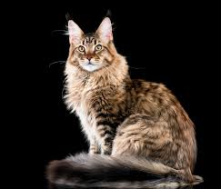
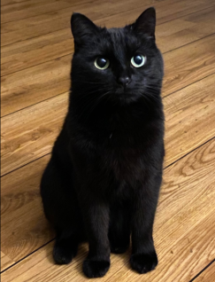
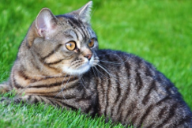
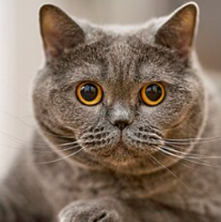
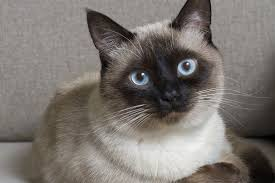
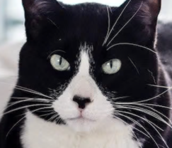
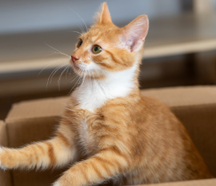
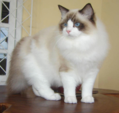
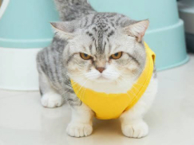

Maine Coon

Personality
Known as “gentle giants,” they are affectionate, intelligent, and playful, often enjoying water and learning tricks.
Breed Profiles

Known as “gentle giants,” they are affectionate, intelligent, and playful, often enjoying water and learning tricks.

Affectionate, social, and deeply loyal companions with a curious streak and even a chatty side.

Friendly, adaptable, and often bold, tabbies tend to be active, affectionate, and endlessly curious.

Calm, easygoing, and low-maintenance, they are affectionate without being overly demanding.

Highly social, vocal, and deeply bonded to their people, Siamese cats thrive on interaction and attention.

Intelligent, charismatic, and full of personality, tuxedo cats are often affectionate and delightfully expressive.

Known for their energetic, playful nature, orange cats are often affectionate, social, and a little chaotic.

Gentle, laid-back, and people-focused, Ragdolls are famous for their relaxed temperament and puppy-like loyalty.

Outgoing, affectionate, and playful, Munchkins are curious little explorers with a surprisingly big personality.